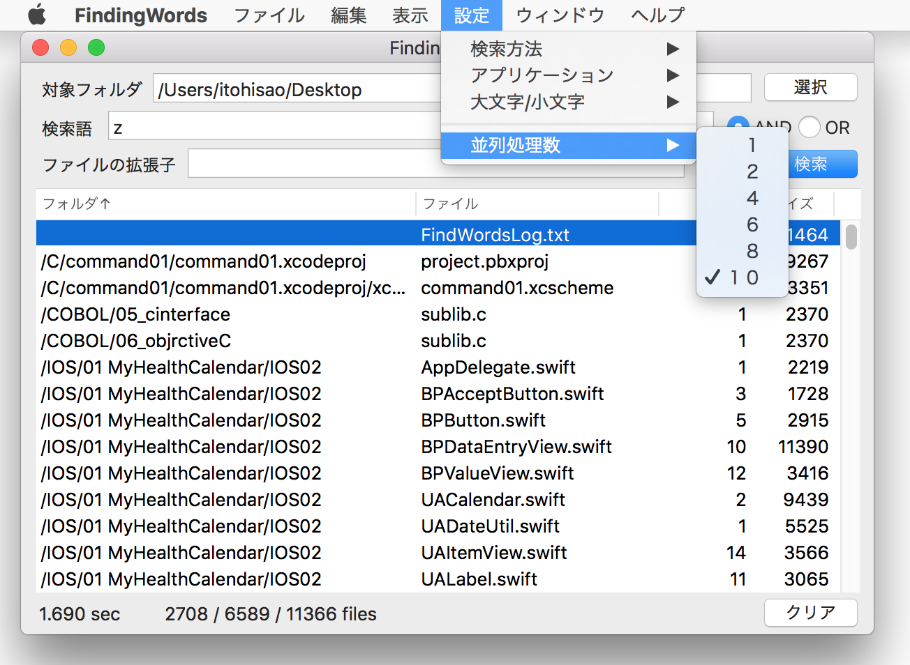
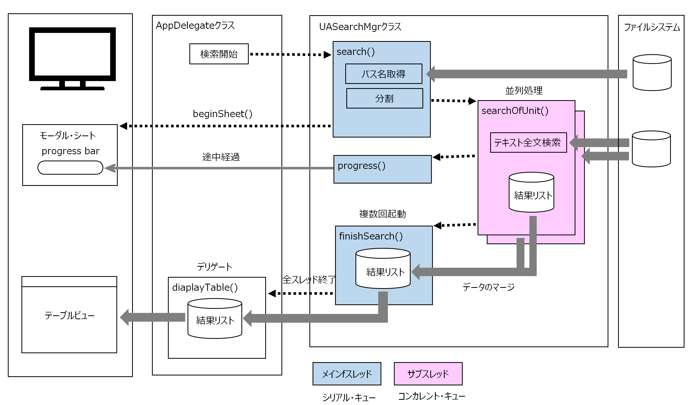

ディレクトリをトラバースしながらファイルを全文検索する（マルチスレッドによる並列処理）
macOS Mojava 10.14.6 / Xcode 11.3.1 / Swift 5.0
GitHub
特定のフォルダの下にあるテキストファイルをサブフォルダも含め全て検索し、指定した検索語を含んだファイルの一覧をテーブルビューに表示する。対象フォルダはオープンパネルにより指定する。
ファイルシステムに対するテキスト全文検索処理は、数千から数万のオーダーのファイルを対象とすることが想定される。ターンアラウンドタイムを短くするために、検索処理を分割し、マルチスレッドにより並列して実行する。

表示項目
検索語にヒットしたファイルをテーブルビューに表示する。表示項目は、フォルダ名、ファイル名、ファイルの中に含まれる検索語の数、ファイルのサイズ（バイト数）である。それぞれの項目をキーにしてレコードのソートを行うことができる。フォルダ名のソートはフォルダ名+ファイル名がキーとなる。列見出しをクリックすると昇順/降順のソートが繰り返される。
テーブルビューのレコードを選択しダブルクリックすると、そのファイルをエディタまたはブラウザで開くことができる。
検索条件を指定する
(1) 検索語の複数指定
検索語を複数指定することができる。ファイルに検索語が全て含まれている場合に判定が真となるAND検索、検索語が最低一つでも含まれていれば真となるOR検索に対応する。
![[findingWords5a]](/lib/HTMLofImage.html?filename=/data/B43/findingWords5a.png&title=findingWords5a&width=600)
(2) 検索対象ファイルの絞り込み
ファイルの拡張子を指定して検索する対象ファイルを絞り込むことができる。拡張子の複数の入力、ワイルドカード（*)による指定が可能である。また除外チェックボックスを on にすれば、上記と逆に指定した拡張子のファイルは検索の対象外となる。
![[findingWords6a]](/lib/HTMLofImage.html?filename=/data/B43/findingWords6a.png&title=findingWords6a&width=480)
(3) 検索方法の指定
検索方法は、Stringクラスのrange(of:)メソッドか、正規表現オブジェクトのいずれかを選択できる。前者は正規表現に対応していない。
![[findingWords2a]](/lib/HTMLofImage.html?filename=/data/B43/findingWords2a.png&title=findingWords2a&width=500)
(4) 大文字/小文字の区別
検索のときアルファベットの大文字/小文字を区別するか、しないかを選択できる。
![[findingWords4a]](/lib/HTMLofImage.html?filename=/data/B43/findingWords4a.png&title=findingWords4a&width=500)
ファイルを開くアプリケーションの選択
いずれかのアプリケーションをメニューから選ぶことができる。
![[findingWords3a]](/lib/HTMLofImage.html?filename=/data/B43/findingWords3a.png&title=findingWords3a&width=500)
状態の保存
ウィンドウの大きさ、テーブルビューの列の幅、列の並びはアプリケーション終了時にユーザーデフォルトに保存する。ユーザによるこれらの変更は、アプリケーションが終了しても次回に引き継がれる。
メニューの設定「検索方法」「アプリケーション」「大文字/小文字」の選択値は plist に保存して引き継ぐ。 ~/Documents/DirectoryTraverse.plist
並列化について
検索対象のファイルを2〜10分割し、それぞれ個別にテキスト検索処理を並列して行い、全ての処理が終了後に結果をマージする。結果は最終的にソートするので処理の順番は問わない。
処理の途中経過（進捗率）をUIのプログレスバーに表示する。進捗率は全ファイル数に対する処理済みのファイル数の割合を表示する。ただしこの機能は効率の点から特定のファイル数（1,000）以下では動かないようにしている。
処理の途中で、処理の中止をUIから受け付けられるようにする。中止ボタンがクリックされたら即時に処理を中止する。
対象範囲が大き過ぎると処理が長時間になるので、ファイル数が特定の数（100,000）を超えた場合、警告ダイアログを表示し、処理をキャンセルできるようにする。
本アプリでは、複数の選択肢からスレッド数を選べるがあまり意味はない。単純に 1 or 10 で良いのだが、Elapsを確認したかったのでそのままにしてある。
クラス関連図
(1) マルチスレッド処理
処理の並列化はGCDによるマルチスレッド機能を利用し、キューはコンカレントとする（シリアルでは処理が直列するので無意味）。処理中のUIに対する出力、UIからの入力の受け付けを可能とするため、サブスレッドの処理は非同期(async）とする。
サブスレッドによる全てのテキスト検索が終わった後、一覧表の作成と表示は AppDelegateで行う。
プログレスバーの表示や、キャンセルの受付などの UI操作はサブスレッド上では実行できないため、それらの処理は一度メインスレッドに切り替えてから実行する。
コンカレントに起動した複数のサブスレッドからオブジェクトの共用プロパティにアクセスするときは注意が必要。たとえば配列に対する要素の追加はスレッドセーフでないので、代入時の競合でシステムクラッシュする可能性がある。
またサブスレッドで作成した値を共用プロパティに更新する処理があったとする。プロパティの値を取得し、それに対して何らかの加工のあと書き戻すをというように処理が複数ステップにわたるとき、多数のスレッドが同時にこの処理を実行した場合、スレッドごとの一貫性が保証されず、予期しない結果となる可能性が高い。
このようなケースでは、処理ブロックをシリアルキューに入れ、時系列に沿った順次処理を保証することで問題を回避する。このアプリケーションでは、個別の検索結果のリストを統合用テーブルにマージする処理と、進捗表示のため処理済みファイル数をカウントアップしプログレスバーに出力する処理をメインスレッドのシリアルキューで実行している。
(2) 処理の同期
並行して実行される検索処理の終了を待って次の一覧表の作成に進むには、同期的な制御が必要になる。ここではグローバルなカウンタを用意し、検索処理がひとつ終わるごとにカウンタをインクリメントし、全てが終わった時点で一覧表を作成・表示するデリゲートメソッドを呼び出す。最後の一回以外はデータのマージのみを行う。